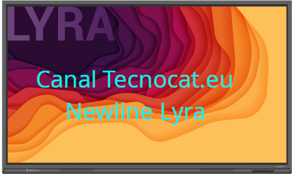
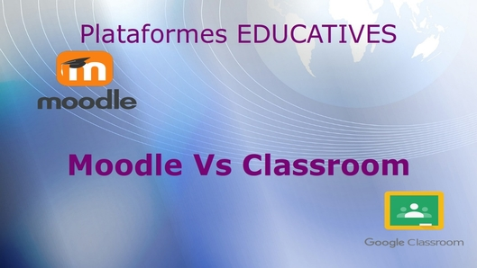

En el vertiginós món de la intel·ligència artificial, mantenir-se actualitzat s’ha convertit en tot un repte. Des de models de llenguatge com GPT-4, Claude i Gemini, fins a sistemes especialitzats en imatges…
General
Categoria

Amb l’arribada de les pantalles tàctils als centres he creat una sèrie de vídeos de com s’utilitza, des d’elements bàsics d’ús, a com connectar el nostre ordinador, com escriure en presentacions, seguir…

Amb tot aquest temps de confinament, ens hem hagut de reinventar i de passar de classes presencials a classes telemàtiques. Això ha fet que s’obri el debat de quin és el millor…

Després de tenir la pàgina aturada un cert temps i d’alguns problemes tècnics, retornem amb il·lusió l’actualització d’aquesta WEB. Hem recuperat algun material perdut, com la documentació de la linkat per coordinadors.…